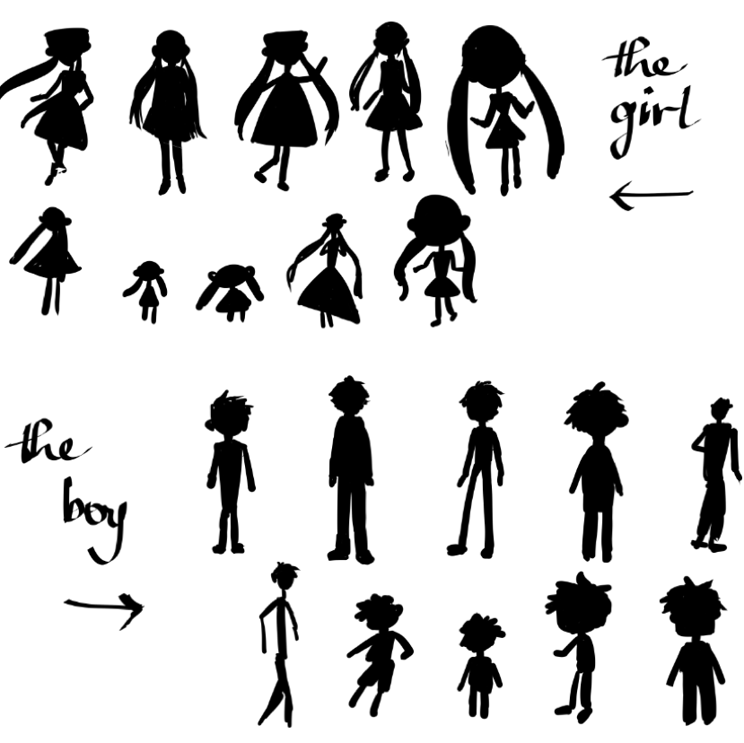

KODOKUSHI
⤵️ Play Video "KODOKUSHI" ⤵️
Song credit: "Kodokushi" - Mihka! X Kyoto Black
Kodokushi (孤独死) or lonely death refers to a Japanese phenomenon of people dying alone and remaining undiscovered for a long period of time.
Even though this Japanese term has a dark meaning, I wanted to make a project to address this issue in a more positive and hopeful way. "Kodokushi" is a light-hearted, colorful, exciting, magical, still a bit sad but hopeful music video about a young aspiring artist who was having a dream of meeting his imaginary friend in his made-up magical world where he was able to freely create anything posible. However, he soon ended up losing his magic and fell apart from that world. Eventually, he came back to reality as it was just a dream, and continue to work on his art. I wanted to convey a message of encouraging young artists to follow their passion with the underlying idea that everyone feels stressed and lonely sometimes, but that’s okay, just remember to be kind to yourself, and to trust and allow yourself to follow your passion/ dream/ purpose.

Style Frame

{kind=link}
Character Shadows

Character Sketches
{kind=link}
Character Lineup
{kind=link}
Room Design